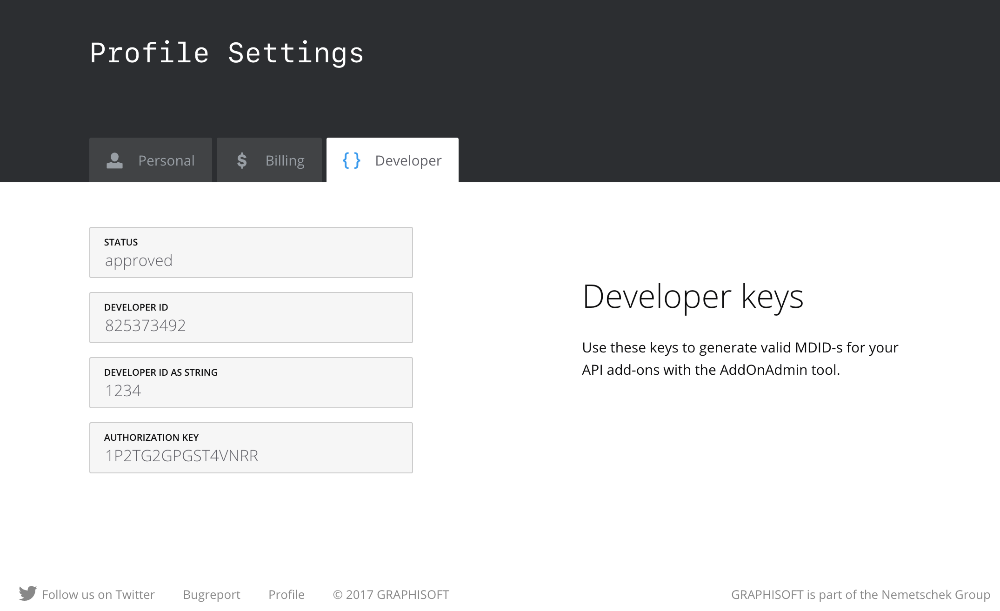
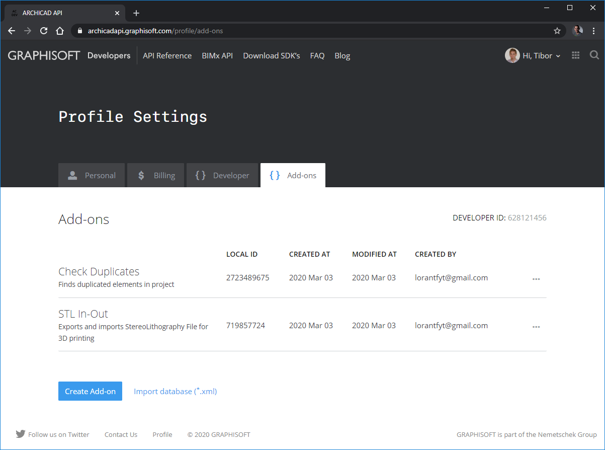

Add-On Management
From Archicad 9 and the API v6.1 Graphisoft addressed some new 3rd Party Policy issues. They are as follows:
- make the API free for evaluation, but
- ensure that only Registered Developers will be able to build commercial products.
In this paper you get information how the above goals are targeted.
Authentication of add-ons
The solution is based on the decision that every add-on has to have a unique identifier from version Archicad 7.0. In that case, that a commercial Archicad version finds that an identifier is invalid, the add-on will be not loaded. If there are two add-ons found with the same identifier, Archicad will reject both.
Valid identifiers can be generated by Registered Developers only. Invalid identifiers will be accepted by the demo version of Archicad only.
How Graphisoft can ensure that the identifiers can be really 'unique'?
The unique ID
All the add-ons built for Archicad must have a mandatory 'MDID' resource. This resource is the unique identifier, it must be exactly 8 bytes long. Practically it is composed from two identification codes, 4 bytes each.
The first part is the developer ID which identifies the developer, who created the add-on. It is available also in decimal and in string format as well, and you will need both of them. The code is generated and given by Graphisoft upon successful registration on the Archicad API site. To have the Registered Developer status, developers must acknowledge and fulfill all the required conditions. Enclosed to the developer ID an authorization key will be presented.
The second part is the local ID. It identifies the add-on itself. Valid local IDs are calculated from the developer ID and the authorization key.
At Archicad API site you can keep your add-ons tracked in your profile. The most important one is the generated local ID, applied automatically when a new add-on is recorded.
You can import your add-ons to the database from an XML file saved by deprecated AddOnAdmin tool.
Feel free to identify your Add-Ons by its name and description. These informations are private, visible only for the logged in developer.